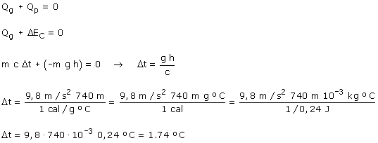

La energía cinética con que llega el agua al pie de la catarata es: EC = m·g·h En el choque inelástico con el suelo se pierde toda esta energía cinética ΔEC = -m·g·h La energía cinética perdida calienta el agua
(Funciona como si fuera un calor perdido).  |